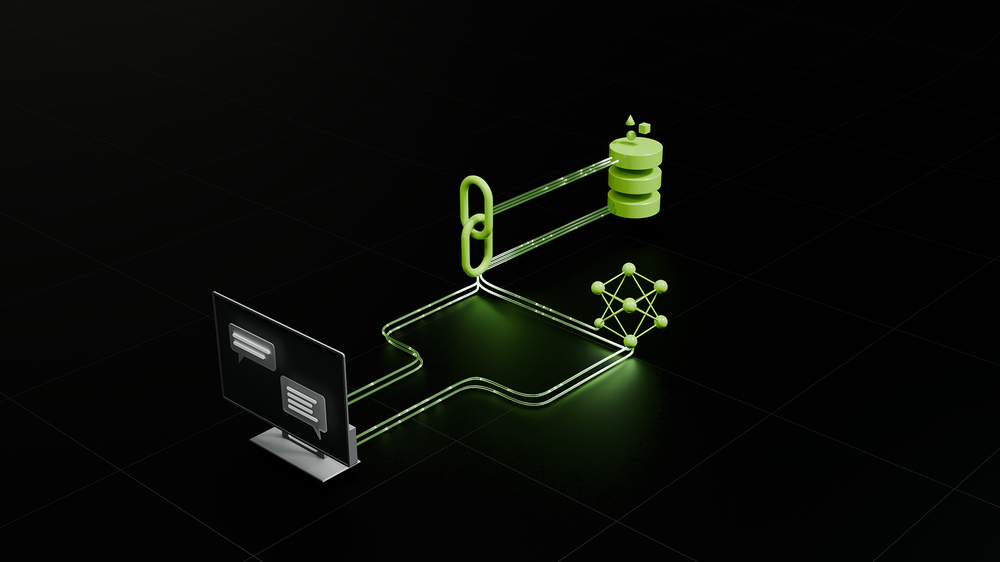

BioBarrier Literature Extraction Pipeline
Improving a regex + RAG pipeline that converts bio-based barrier-materials papers into validated MongoDB records, capturing five additional experimental fields per paper.
Python
RAG
Regex
MongoDB
TypeScript